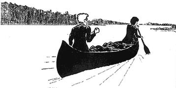
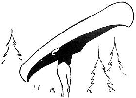
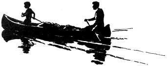

I'm a big Mark Twain fan and I think Huck Finn was a good guy but - when my husband, Steve, suggested that we canoe from upstate Ohio to New Orleans - I thought he was making some kind of outlandish joke. It took some time for me to stop laughing and really consider the idea: A canoe trip down the Mohican, Muskingum, Ohio and Mississippi Rivers all the way to ole New Orleans. Nineteen hundred miles.
I soon quit chuckling altogether and adopted the idea as my own. There was one still - funny part, however: Neither of us had ever canoed before.
As with most projects, the hardest part of this one was in the "getting going". Equipment and money were not easy but, with two months earnings and a little savings, we were ready to shove off. The biggest single item - a $250, 17 foot Grumman canoe - was a gift.
If you'd like to duplicate our oddessy and money is a large problem, there are some workable solutions. For one thing, if you don't mind exposing yourself to "advance" publicity, people will donate all sorts of equipment. It also would be fairly easy on a journey like this to get odd jobs, especially at the numerous yacht clubs, harbors and homes on the Ohio River. If time and momentum are of no concern, you can work on farms or in towns along the way. I even read a dusty old book about a guy who built a houseboat and took a similar journey in a couple years' time - growing his own food on the way!
Another method of obtaining funds - more likely after the trip is completed - is by writing stories for magazines and journals. National Geographic, True, sporting publications, wildlife and conservation magazines and newspaper Sunday supplements are excellent targets, especially if you manage to get some good photographs.
We took no cash with us. We did have $350 in traveller's checks and we spent only about $200 of that. Total expenses for both of us were under $3 a day-cheap living by any standards. Yet, even a large part of that money was unnecessarily expended, especially on the earlier parts of the trip when we were less disciplined to the ways of the wild.
After searching out every possible Army-Navy store bargain and squeezing through some homestead hassles, we finally plunked our canoe into the Mohican River at Loudenville, Ohio. A lot of rented canoes float down the Mohican River and the people in them with whom we communicated couldn't believe we were undertaking such a long journey - especially when they saw how we canoed! But, believe me, we learned the practicalities of river navigation quickly.
There are two main premises that one should accept before attempting a trip such as ours. One is: Do not plan. Plans mess up everything. Too many beautiful trips have been ruined by planning when, where and what. Let things happen as they may and leave the planning to Greyhound.
The second rule is: Accept every offer of assistance or kindness. When people are doing something unusual, others are interested in helping and becoming part of it. Furthermore, people-especially those in the country are often unusually generous. People offered us free meals, overnight stays, water skiing rides, loads of beer, money, a jaunt to the county fair, barge tours, clothes, decent advice and a lot of cheering on. So never turn down an offer - they are often exciting, extremely interesting . . . and almost always satisfy a hungry belly.
Our equipment consisted of a tent, jumbo sleeping bag, tarpaulin, cooking utensils, fresh water carriers, maps, camera, and a lot of garbage. Upon entering a camping store, you will be amazed at all the wonderful equipment you can buy. Don't do it! If you think you might need a piece of gear sometime - forget it! Purchase only those things you are certain to need - anything else you can buy along the way.
Detailed maps for the Ohio and Mississippi Rivers are available from the U.S. Army Corps of Engineers in Cincinnati and New Orleans, respectively, at a cost of five dollars. These maps are not only very useful, but highly interesting. They are designed for precise navigational use by barges (although many captains know the river by heart) and power boats. The two books differ somewhat. The Ohio maps illustrate only a five mile river span per page and show the towns right on the river as well as buoys, terminals, marinas, dams, and other markings. The Lower Mississippi (from Cairo, Illinois to the Gulf) maps present 15-25 river miles per page plus vast detail of a large surrounding topographical area, the river's former courses and much other information.
Both map books are useful in showing accurate mile markage (markers are on the river banks also but they are often too far away or too high to be seen from a canoe).
The maps will also help you determine a good place to camp, approach locks (on the Ohio), discover towns behind clumps of trees and find numerous short cuts. For example - on the Mississippi where the river curves and winds, travelling at one time or another in every direction - our map told us that a huge horseshoe bend was 22 river miles around, while the land distance across the narrowest point was under one-half mile! We put down our paddles and, with some assistance, lugged the canoe across the portage. Unless you are a geographical wizard, the maps are a necessity. And they make great fire starters!
Amongst some of the more necessary equipment are canoe paddles. Since none cost over five or ten dollars, it is wise to get the best quality available to prevent breakage and excessive wear and tear. Grumman brand, which we used, are usually pretty reliable. A paddle, stood on end, should reach as high as the shoulders and no higher than the eyes of the paddler who will use it. Chin high is ideal.
An extra paddle is often recommended and we started out with one. It was quickly lost. Many canoers use gloves. We also started with some and, of course they were quickly lost. An ample amount of callouses soon developed on our hands to protect whatever was left underneath.
We brought two foam cushion "life jackets" which served mainly to prevent blisters on our bottoms. The important thing to remember with an aluminum canoe is that it has air pockets and will float under any condition. If you tip one you should automatically try to grab the canoe as you go over. You can practice maneuvers if you feel shaky about this, but life jackets, per se, are pretty useless despite what the red cross manuals say.
Our tent was a 5' by 8' outside frame. It was adequate for our uses and cost about $25. The shelter was fairly light and had a floor. This is a valuable asset when the best camping place for miles is on a hill, slope or mountain, leaving one susceptible to rain water. The floor will also keep out snakes, rats and other pests.
Our tent was sturdy but - once while camped on a sandy island - a Mississippi River rain and sand storm broke all the poles. During that storm we tried to make repairs but the fierce wind and blinding sand made it impossible. We have to wait - with the mass of smelly, soaked and sandy cloth that once was a tent cozily pressed against us - until the storm passed. After we dug ourselves out in the morning, we were able to patch up the shelter.
Our sleeping bag (which was really two identical bags zipped together) was large and well-insulated . . . for which we were thankful on many cold nights. The bag was made of cotton with flannel lining and we quickly learned to keep it covered and off the floor of the canoe while paddling. Otherwise, at night, the splashed water and rain of the day make it as snug as a WWII movie's trenches.
Although we foolishly packed too many clothes, you should be equally as careful not to take too few. At least one change of clothing should be kept in a (hopefully) dry area. Otherwise, after a heavy rain storm, you may find yourself very cold and miserable . . . rain ponchos do not always do their job.
We also encountered vast weather changes, and I suspect this would be the case during every season of the year. One day we would be hot in bathing suits while the next, fierce cold and wind would have us bundled in two or three layers of clothes.
Hats are very desirable for heavy sun and pounding rain. We went through five sets that blew away or were left behind.
One piece of equipment that we found particularly useful was a heavy repellent treated canvas tarpaulin. This can be used very effectively during the day to cover gear in the canoe and at night as additional buffering under the tent or over supplies left in the open.
Another handy product is Sterno, or other canned heat. Although one can cook over Sterno exclusively, we mainly use it to start damp or wet wood on fire. A burning can of Sterno, placed underneath a stack of campfire material will dry the wood and start a fire. By the way, keep plenty of matches in watertight containers.
Periodically, we pulled up on a bank and stopped to shop at riverside towns. We carried mainly canned food. Fresh foods spoiled too easily in the heat and the special dehydrated camping packs were costly and hard to purchase along the way.
There is a sizeable variety of canned foods and they are simple to prepare . . . just don't lose the can opener! Canned foods are heavy, though, so distribute the weight evenly and be careful not to overload your canoe.
Since we normally did not stop to cook lunch during the day, we made peanut butter-and-jelly-on-stale-bread sandwiches (I have not been able to stomach one since) for our daily nourishment. We also tried to buy a certain amount of "energy" foods, usually vanilla wafers because they are so cheap. No matter what rationing method we used, however, these goodies were inevitably eaten on the first day after shopping.
Although we are not meat (or fish) eaters we found some great fishing and hunting opportunities all along the way. On the smaller streams, the lower Ohio near Indiana and Illinois, and all of the Mississippi the fishing seemed especially good. Fishermen were particularly ample on the downstream end of locks, or in idle lock chambers (the lockkeepers being the prime fishers) and we noticed numerous traps and nets which farmers emptied frequently. The fishing was productive on the Mississippi as it entered Louisiana that the guard at the ferry to Angolia, the riverside prison farm, let inmates guard themselves while he checked his various traps. Many happy fishermen offered us part of their catch to cook.
As for game, there are numerous open-hunting state parks along the way in season. Gulls and other birds are easy prey, as are squirrels and a variety of other game. But be cautious. We met one game controller on the lookout for gun-happy hunters.
One of our greatest concerns was ample drinking water. We usually filled two of our five-gallon containers every two days at whatever was closest: Boat, home, dock or ferry. Mark Twain claimed you could always tell the true riverman because - after he dipped his cup in the muddy river water - he stirred it vigorously before drinking so as not to lose any of the grit through settling. Back in Twain's day that was, perhaps, OK but we were never quite convinced that the river water was anything close to suitable for drinking.
Finding a camping spot on the rivers takes keen observation and an ability to compromise. It is best to start looking for a site about an hour before you actually intended to quit for the day. Start looking while there is still daylight. On the smaller rivers and on the Ohio, the banks are solid ground - usually covered by heavy foliage - and often steep. The Ohio, because it is dammed, is extremely wide and it's best to concentrate camp hunting on only one bank. The best, and sometimes only camping spots are cleared areas. This occasionally means someone's lawn or boat ramp.
The forested areas can be miserable. I will never forget that sleepless night on what was later dubbed Mosquito Island. By the way, bring a good deal of mosquito spray as well as Calamine lotion if you wish to sleep at all. Other than bugs and animals, it is sometimes just impossible to find a square foot or two on the timbered banks in which to set up a suitable camp. The areas aren't exactly the local metropolitan parks.
On the Mississippi, though, the camping situation vastly changes. The banks are often mucky and swampy - even, deceptively so - but there are numerous sand bars and "beaches". These are shown on the maps so you can decide early where you might camp. The sand bars are the best and most comfortable spots providing you use long sticks, instead of pegs, to hold down the tent. On the islands there is usually plenty of dry driftwood for a fire and few bugs.
Remember to pull your canoe out of the water when camping or else you'll wake up stranded some morn. It's best to load the canoe with rocks or to turn it over, and then tie it to something - even if you have to drive a stake. When stopping at a town, tie the canoe well or you might, like us, stroll back from Columbus, Kentucky to find your transportation in the middle of the river. Incidentally, don't get uptight about things being stolen - it just won't happen.
I mentioned that the Ohio River is dammed - is it ever! From where we entered the Ohio at Marietta, to Cairo where the river ends - 800 miles - we passed through about 19 locks and dams. One every fifty miles. And we had already gone through nine locks on the Muskingum.
The Muskingum locks, which lower boats to the next "pool" of water created by a dam, are very small and operated by hand-cranking the lock doors open and closed. They are used solely by pleasure craft. Since there are no maps for this river, it is best to ask motorboaters or the lockkeeper for the distance to the next lock. Then watch carefully for the dam since it will be marked only by two buoys and being whished over even a six foot drop is not good for one's welfare. However, the main problem with these small locks is finding the lockkeeper who is usually asleep, fishing, grumpy or interested only in a fee.
The Ohio River locks and dams are in a different league. They range in heighth from 10 to 100 feet, are open nearly all year and at all hours, are built for commercial boats and the chambers range from the size of a football field to three or four times that. They make a canoe look pretty puny.
Maps are highly useful in approaching these dams because it is necessary to determine in advance which side of the river the lock is on. The Ohio is between a half and one mile wide and if you come too near the dam on the wrong side of the river, the current may push you over.
With the river maps, the Army Corps sends out all sorts of literature about lock procedure, tooting your horn one mile in advance and waiting at designated spots until given the "go" signal. We naively took these instructions a little too gravely when we approached the first lock on our map of the Ohio River. We conscientiously layed over at the marked area, waited patiently for the "go" signal and tried bravely to reread and follow all directions. It was one hour later and after three motorboats had zoomed over the supposed dam - to our amazement - that we finally discovered the dam had blown out a week earlier (the lock was left standing). Nonetheless, we soon learned the best locking procedure for a canoe.
First one should paddle up to the bank wall of the lock, which juts out quite a distance from the actual chamber. There you'll find an iron ladder, usually slippery (I made a regular habit of falling into the water from them), that leads to the top of the wall. After a nice half-mile walk, you will discover a lock worker who will tell you what to do next.
Locking takes a minimum of an hour and a half and can take up to a day depending on whether any barges must lock first (they have precedence, but one can lock through with all barges except oil and chemical carriers). There is one simple way to avoid this whole locking mess: Go in spring or high water when the dams are let down!
Portaging - carrying the canoe and equipment across land - is rarely necessary on a trip such as this since most of the waters are navigable. On the earlier rivers (Mohican, Muskingum) we did have to portage five times, mainly across dams that did not have locks or where the locks were not operating (i.e. the lockkeeper was indisposed). On the Ohio, we portaged once at a lock to avoid a long wait. Let me point out, though, that at most of the Ohio locks, this is impossible because the land around the lock is extremely steep and craggy. But if you are a mountain climber as well, on the Mississippi we had to portage a couple of times out of sheer stupidity, usually when we decided to take an "intuitive" shortcut that deadened into a sandbar.
We usually paddled about ten hours a day - or 30 miles on the Ohio and 40 on the Mississippi (the currents varied). Paddling is very simple and it soon became an automatic and subconscious motion.
The stronger, and (hopefully) heavier partner should be seated in the back of the canoe. If the more powerful paddler weighs less than his partner, equipment should be arranged so that more than half of the total load is behind the center of the canoe.
There are merits to both the front and back positions. The back paddler must learn various extra motions, such as the "J-stroke", since he is the one who controls the direction of the canoe. However, he has a more comfortable seat and much greater leg room. The front paddler, who often kneels rather than sitting on the seat, is more cramped, being directly in the bow. On the other hand, he is the less essential of the two and needs to learn only one basic stroke.
Once paddling is mastered, about the only other skill necessary is learning to get into the canoe from deep water (i.e. after a swim) without swamping the craft. This might take some practice, but merely involves pulling one's body up over the canoe with a pushup-like maneuver, and then sliding in.
When paddling, the only stops we made other than shopping trips or special visits were basically what we termed "pit stops". Otherwise, we became fairly deft at doing just about anything and everything from the canoe. I, for instance, became particularly adept at sleeping.
Before we saw for ourselves, we heard numerous horror stories about the big, bad barges. They were mainly tall tales. The barges are flat, rectangular slabs which sit only a few feet above water level. Anywhere from two to 54 are pushed by a "towboat" which, unlike lake and ocean tows, is square both front and back. When these "trains" pass, they create waves - but rarely problems - for a canoe. Motorboats, which ride the waves like surfboards, have more trouble.
The only time problems arise for a canoe is when it comes too close to the barge or when the water is already particularly turbulent. For example, where the Ohio and Mississippi Rivers meet there is considerable turbulence and eddies and a passing barge jolted us harshly and emerged us in some good river water. It was a wonderful greeting to the Ol' Miss'. At any rate, barge crews - which one mate told me were composed of "lunatics, criminal, beatniks and malcontents" - are extremely friendly and very generous with handouts. At their worst they continually scrutinized us with high-powered binoculars, which only occasionally give us a sense of paranoia.
Every now and then we undertook night canoeing. This can be both fun and dangerous. Although the barges have radar, a canoe looks like a piece of driftwood to them. If they do catch your canoe on radar, the barges will use brilliant carbon beams to search the area but, more than likely, never find you. Normally, though, a string has only two small colored lights on the front end of the first barge and they move very quietly. Thus the canoeist beware! Between Baton Rouge and New Orleans huge freighters travel at night at deceivingly fast speeds and they can't see a canoe if they try. We did, however, meet a barge mate who had made a somewhat similar journey in a rowboat years earlier and he preferred to travel mainly at night to avoid the intense heat of the day. So the final choice is up to you.
We had one major disaster about 4/5 of the way through our journey. It all stemmed from committing a Super no-no: Never pull (paddle) the canoe up to another boat, especially a large one, on the river side, especially in fast current. Otherwise - like us - you are likely to be sucked under the barge by the swift current and - like us - overjoyed to come out alive even if all equipment (except the canoe which always floats) is lost. Therefore, it is extremely important to follow this simple rule of the river. And by the way, if you ever reach Rosedale, Mississippi, revere it - a small fortune lies there at the bottom of the river.
The "whats" and "how" of canoeing on major rivers - such as the Ohio, Missippi, or Missouri - are easy to verbalize. However, the experience itself cannot be related so simply.
We passed through ten states and areas that are rural, urban, resort and wild. We saw some of America's great contrasts - the most beautiful natural landscapes and the ugliest most obnoxious pollution. We met hundreds of people who helped us understand what small towns, the Midwest, countryside, the South, this nation and the land itself are all about. We learned as never before.
We got to know, not only ourselves and each other, but a river with a vast history that is so grand and unpredictable that not even modern man - with all his technology, revetments, cement banks, dikes and dams - can intimidate, stifle or tame it. But mainly, we experienced an adventure that - like the water - cannot be constant, must always be flowing and dynamic in format and will necessarily be vastly different for each individual.
We paddled for 67 days to reach our New Orleans goal. One could continue for pages about those days and write about that Old Man River and phlegmatic weather and sore muscles and blue Ohio water and canned spaghetti and singing and yacht clubs and dead fish and thirsty cows and the sun rising over a silver canoe with a couple of people just discovering America's oldest highway. After 9 1/2 weeks spent not too outlandishly, we finally paddled into New Orleans, Louisiana . . .
So now move over, Huck - we made it!
|
 |
 |
 |